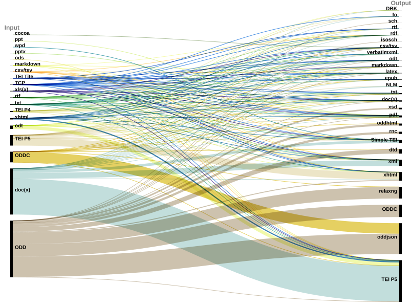
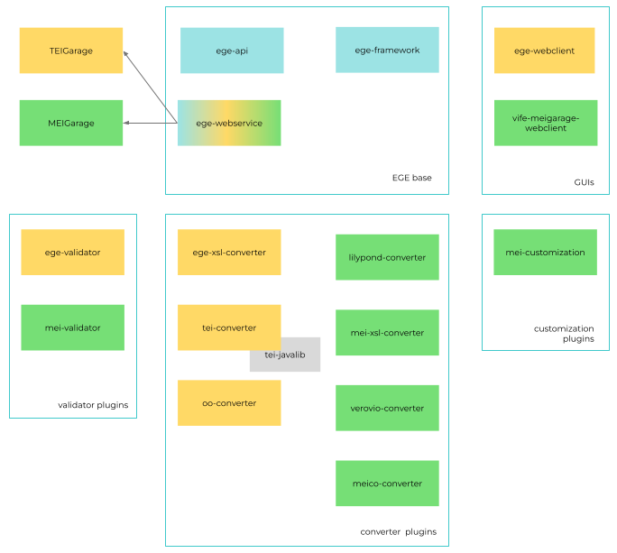

Building sustainable infrastructure for scholarly communities
Best practices for empowering research with collaboration in the TEI and MEI context using XGarage


Peter Stadler and Anne Ferger | Paderborn University
How can the infrastructure of TEIGarage and MEIGarage (formerly OxGarage) best be sustained?
Challenges and practices of sustaining TEIGarage & MEIGarage
- MEIGarage & TEIGarage (formerly OxGarage)
- Sustainability of Software and Infrastructure
- Deployment, Virtualisation and Containerisation
- Best practices for sustainable infrastructure
MEIGarage & TEIGarage (formerly OxGarage)
OxGarage
OxGarage is a webservice and framework to manage transformations and validations between a variety of text formats and can be used via an online interface or by calling the API (Application Programming Interface). Its plugin setup allows for integration of further transformations of different file formats. The code base of OxGarage is over 10 years old.
OxGarage on the way to TEIGarage and MEIGarage
In 2018 in an TEI effort of containerization of services a Dockerization of the software took place. In 2019 work commenced on a MEI-specific OxGarage, referred to as MEIGarage. Around 2022 after structural work on the codebase the TEI OxGarage acquired the new name TEIGarage.
Usage of TEIGarage 
Examples of tools using TEIGarage
Recent structural work on the codebase
- extracted different parts/modules to their own git repositories while keeping the (git) history of only those parts
- storing artifacts (jars) of the modules in GitHub Packages directly
- allowing for collaboration on common elements and keeping configuration and specific functionality separate
➞ facilitated development on specific parts only
Elements of the Garages 
Finding out more about the software:
- Presentation slides and posters of the recent developments can be found at anneferger.github.io/MEITEIGarage
- MEIGarage and TEIGarage code
structure
- We welcome you to get in touch if you want to integrate existing transformations!
Sustainability of Software and Infrastructure
Software vs. Infrastructure
- Central deployment and Garage framework as a technical form of infrastructure
- Software as the basis for deployment and infrastructure
Aspects of Sustainability
- Triple bottom line:
- Social sustainability
- Economic sustainability
- Ecological sustainability
- Technical sustainability
Social sustainability
Benefit to research communities
Economic sustainability: Funding and costs
Long-term Funding and costs
Ecological sustainability: Ecological impact of infrastructure
Ecological impact of infrastructure
See the AG Greening DH for recent work on this in the Digital Humanities
we try to avoid superfluous builds and deployments
Technical sustainability
Sustaining and maintaining infrastructure long-term
See measures for a sustainable codebase in these slides
Deployment, Virtualisation and Containerisation
Virtualisation and Containerisation
- Building using Docker, Dockerfiles, Dockerimages
- Continuous Integration (CI) and Continuous Deployment using GitHub Actions
- Cluster for Deployment of Docker images using Kubernetes
Advantages of a central deployment
- reproducible research (e.g. concerning versions of guidelines and stylesheets)
- low-threshold interface
- permanent API endpoint
Costs of a central deployment
- Hardware (Servers)
- Basic Software Infrastructure for container orchestration and virtualisation
- Maintainers
(Best) practices for sustainable infrastructure
MEIGarage and TEIGarage in practice
- central deployments
- Dockerfiles
MEIGarage and TEIGarage in practice
- Servers
- Cluster at Paderborn University managed by ViFE (Virtueller Forschungsverbund Edirom)
- French Research Infrastructure Huma-Num huma-num.fr
Sharing of knowledge, workload and responsibility
TEI Infrastructure Group as an example for collaborating on infrastructure
Deployment
Potential for further automation: DNS setup
Monitoring of infrastructure
- Different because of different server setup
- Also important for generating statistics
Server setup
- Different servers but same building and deployment process
- persistent logs: also important for generating statistics
Collaboration with community
- Feature requests
- statistics on usage
References
- Anzt, H. et al. (2021) ‘An environment for sustainable research software in Germany and beyond: current state, open challenges, and call for action’. F1000Research. Available at: https://doi.org/10.12688/f1000research.23224.2.
- Baillot, Anne et al.: „Digital Humanities and the Climate Crisis. A Manifesto“, Foregrounding the Climate Crisis Within Digital Humanities Work, https://dhc-barnard.github.io/dhclimate/ (accessed 24.04.2023).
- Burnard, L. (2013) ‘The Evolution of the Text Encoding Initiative: From Research Project to Research Infrastructure’, Journal of the Text Encoding Initiative [Preprint], (Issue 5). Available at: https://doi.org/10.4000/jtei.811.
- Hasselbring, W. et al. (2020) ‘From FAIR research data toward FAIR and open research software’, it - Information Technology, 62(1), pp. 39–47. Available at: https://doi.org/doi:10.1515/itit-2019-0040.
- Hong, N.P.C. et al. (2022) FAIR Principles for Research Software (FAIR4RS Principles). Available at: https://doi.org/10.15497/RDA00065.
- Penzenstadler, B. (2013) ‘Towards a definition of sustainability in and for software engineering’, in Proceedings of the 28th Annual ACM Symposium on Applied Computing. New York, NY, USA: Association for Computing Machinery (SAC ’13), pp. 1183–1185. Available at: https://doi.org/10.1145/2480362.2480585.
- Stadler, Peter, Ferger, Anne and Röwenstrunk, Daniel (2022) ‘From OxGarage to TEIGarage and MEIGarage’. Available at: https://doi.org/10.5281/ZENODO.7061525.
- Sverdrup, H. and Svensson, M.G.E. (2005) ‘Defining the Concept of Sustainability - a Matter of Systems Thinking and Applied Systems Analysis’, in M.-O. Olsson and G. Sjöstedt (eds) Systems Approaches and Their Application: Examples from Sweden. Dordrecht: Springer Netherlands, pp. 143–164. Available at: https://doi.org/10.1007/1-4020-2370-7_6.
- Venters, C. C. et al. (2014) ‘Software Sustainability: The Modern Tower of Babel’, RE4SuSy: Third International Workshop on Requirements Engineering for Sustainable Systems. Edited by B. Penzenstadler, M. Mahaux, and C. Salinesi. CEUR. Available at: https://eprints.whiterose.ac.uk/84941/.